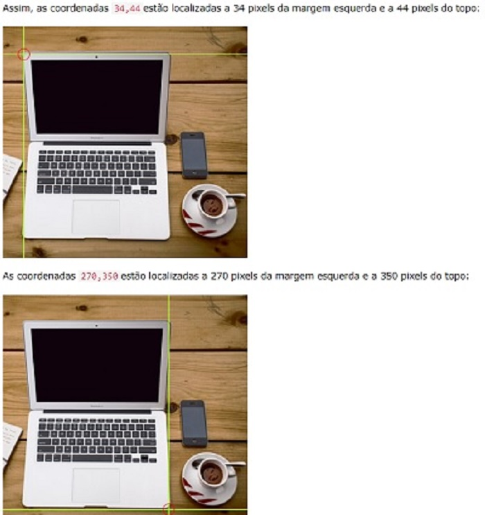
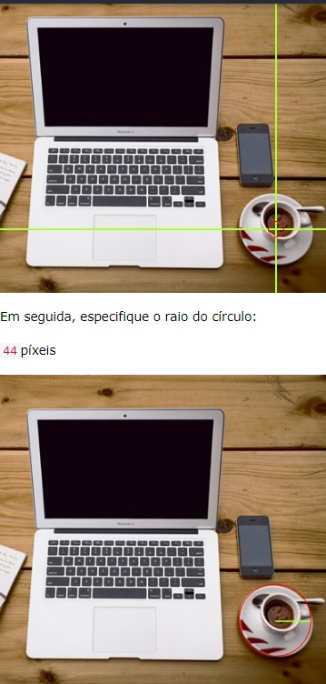
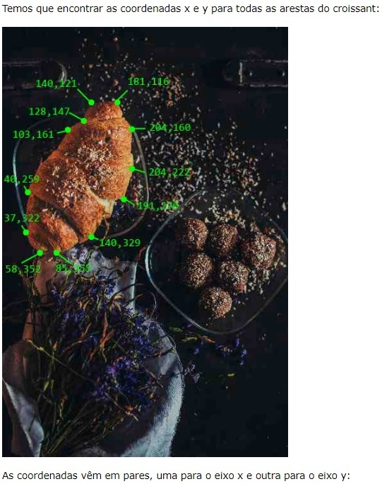

Clique no computador, no telefone ou na xícara de café para ir para uma nova página e ler mais sobre o assunto:

A tag HTML 'map' define um mapa de imagem. Um mapa de imagem é uma imagem com áreas clicáveis. As áreas são definidas com uma ou mais 'area' tags.
Como funciona: A ideia por trás de um mapa de imagem é que você deve ser capaz de realizar diferentes ações, dependendo de onde você clicar na imagem.
A imagem é inserida usando a 'img' tag. A única diferença de outras imagens é que você deve adicionar um 'usemap' atributo.
O usemap valor começa com uma marca de hash # seguida pelo nome do mapa de imagem e é usado para criar um relacionamento entre a imagem e o mapa de imagem.
Em seguida, adicione um 'map' elemento.
O 'map' elemento é usado para criar um mapa de imagem e é vinculado à imagem usando o name atributo obrigatório.
O name atributo deve ter o mesmo valor do 'img' atributo de usemap.
Em seguida, adicione as áreas clicáveis.
Uma área clicável é definida usando um 'area' elemento.
Você deve definir a forma da área clicável e pode escolher um destes valores:
1. rect- define uma região retangular
2. circle- define uma região circular
3. poly- define uma região poligonal
4. default- define toda a região
Você também deve definir algumas coordenadas para poder colocar a área clicável na imagem.
As coordenadas para shape="rect" vêm em pares, uma para o eixo x e outra para o eixo y.
Assim, as coordenadas 34,44 estão localizadas a 34 pixels da margem esquerda e a 44 pixels do topo
As coordenadas 270,350 estão localizadas a 270 pixels da margem esquerda e a 350 pixels do topo:

Para adicionar uma área de círculo, primeiro localize as coordenadas do centro do círculo.
Em seguida, especifique o raio do círculo: 44pixeis

O shape="poly" contêm vários pontos de coordenadas, o que cria uma forma formada com linhas retas (um polígono).
Isso pode ser usado para criar qualquer forma.
Como talvez uma forma de croissant!
